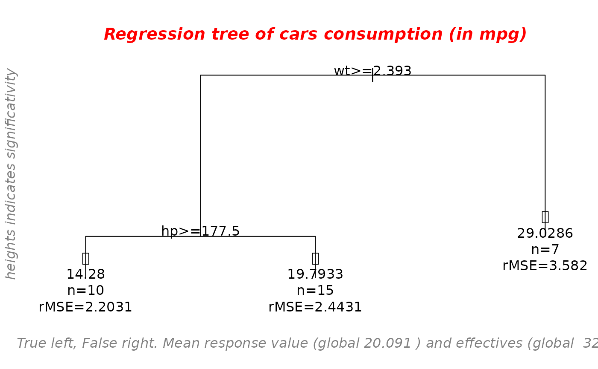

Decision tree in a recursive way
recursive_tree( data = data, Y = "Y", modele = NULL, kill = NULL, index = NULL, verbose = TRUE, plot = TRUE, main = NULL, sub = NULL, lang = c("en", "fr"), all = FALSE, digits = getOption("digits") - 3 )
| data | the dataset including the response |
|---|---|
| Y | the name of the response |
| modele | (optional) vector of names of covariates allowed in the tree |
| kill | vector of the names to kill (variables won't be used in the tree) |
| index | to give a number to the plot |
| verbose | boolean to print the tree parameters |
| plot | boolean to plot the tree |
| main | the main title if plot=TRUE |
| sub | the subtitle (if NULL it is automatically added) |
| lang | the language for the automatic subtitle in the plot |
| all | Logical. If TRUE, all nodes are labeled, otherwise just terminal nodes. |
| digits | number of digits for legend of the leaves |
returns the tree as an "rpart" object and the modele as a vector of the names of the covariates the tree could have used (to give as an input of the function).
vector of the names of the covariates the tree could have used
the regression tree as an "rpart" object
data <- mtcars main = "Regression tree of cars consumption (in mpg)" mytree = recursive_tree(data = data, Y = "mpg", main = main, verbose = FALSE)#> Warning: graphical parameter "cin" cannot be set#> Warning: graphical parameter "cra" cannot be set#> Warning: graphical parameter "csi" cannot be set#> Warning: graphical parameter "cxy" cannot be set#> Warning: graphical parameter "din" cannot be set#> Warning: graphical parameter "page" cannot be set# want to try without cylinder and disp mytree2 = recursive_tree(data = data, Y = "mpg", kill = c("cyl", "disp"), modele = mytree$modele, main = main, verbose = FALSE)#> Warning: graphical parameter "cin" cannot be set#> Warning: graphical parameter "cra" cannot be set#> Warning: graphical parameter "csi" cannot be set#> Warning: graphical parameter "cxy" cannot be set#> Warning: graphical parameter "din" cannot be set#> Warning: graphical parameter "page" cannot be set